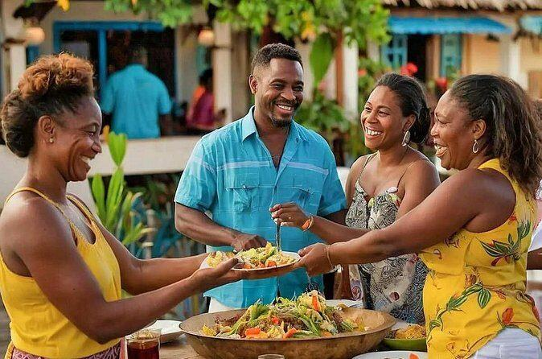

Cultural Heritage
It helps preserve traditions and cultural knowledge.

Celebrating Grenadian Culture Through Food
Saraka is a traditional cultural custom practised in Grenada. It is associated with communal gatherings, the sharing of food and the passing down of traditions from one generation to another.
Saraka is commonly understood in the context of Grenada's African cultural heritage and the traditions preserved by communities over generations. Food, community participation and shared customs help keep this heritage alive.
The exact history and practices may differ between communities. Local elders and cultural organisations can help explain how Saraka has been observed in particular parts of Grenada.

It helps preserve traditions and cultural knowledge.
It encourages people to come together and share.
Food can bring people together and connect generations.
Explore Grenada's culture, heritage and visitor attractions through the official tourism website.
Explore Pure GrenadaWatch this video to learn more about Saraka, its traditions, and its importance to Grenadian culture.